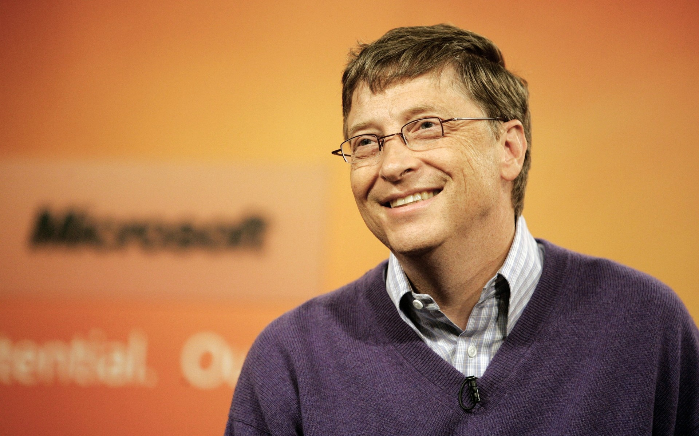
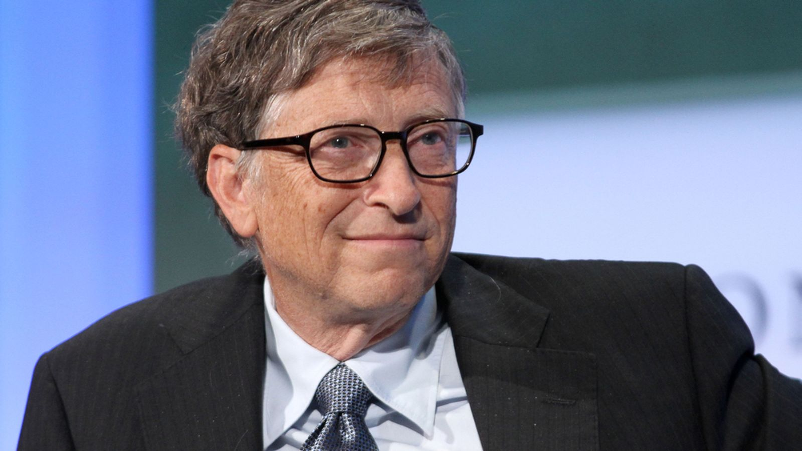
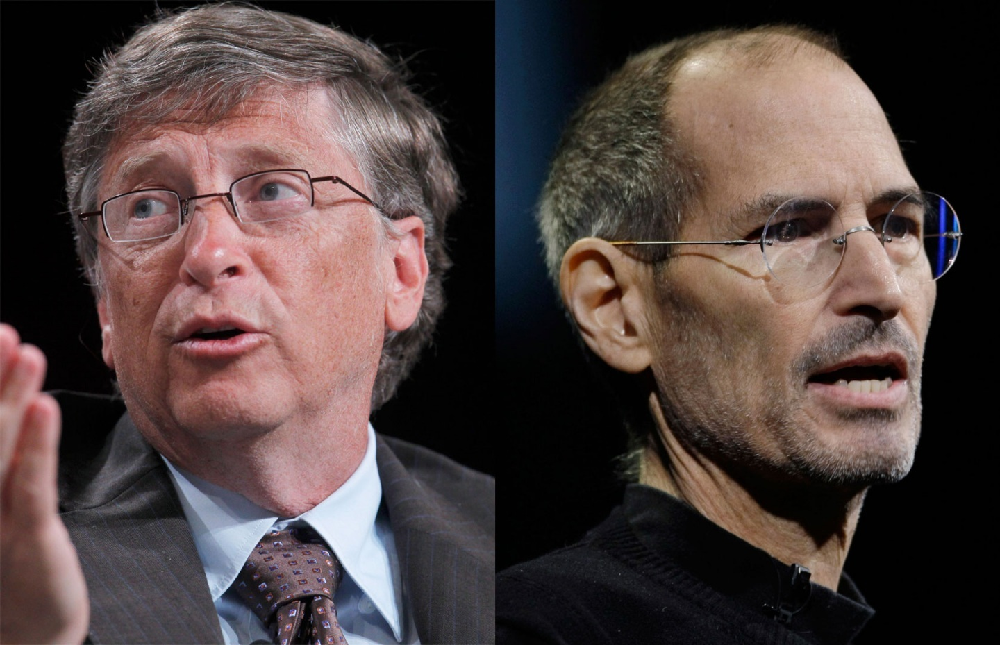

William Henry "Bill" Gates III (born October 28, 1955) is an American business magnate, investor, author, and philanthropist.In 1975, Gates and Paul Allen co-founded Microsoft, which became the world's largest PC software company. During his career at Microsoft, Gates held the positions of chairman, CEO and chief software architect, and was the largest individual shareholder until May 2014.Gates has authored and co-authored several books.
Since 1987, Gates has been included in the Forbes list of the world's wealthiest people and was the wealthiest from 1995 to 2007, again in 2009, and has been since 2014.Between 2009 and 2014, his wealth doubled from US$40 billion to more than US$82 billion.Between 2013 and 2014, his wealth increased by US$15 billion.[10] Gates is currently the richest person in the world, with an estimated net worth of US$84.2 billion as of January 2017.
Gates is one of the best-known entrepreneurs of the personal computer revolution. He has been criticized for his business tactics, which have been considered anti-competitive, an opinion that has in some cases been upheld by numerous court rulings.Later in his career, Gates pursued a number of philanthropic endeavors, donating large amounts of money to various charitable organizations and scientific research programs through the Bill & Melinda Gates Foundation, established in 2000
Gates stepped down as chief executive officer of Microsoft in January 2000. He remained as chairman and created the position of chief software architect for himself.In June 2006, Gates announced that he would be transitioning from full-time work at Microsoft to part-time work, and full-time work at the Bill & Melinda Gates Foundation.He gradually transferred his duties to Ray Ozzie and Craig Mundie.He stepped down as chairman of Microsoft in February 2014, taking on a new post as technology adviser to support the then newly appointed CEO Satya Nadella.
In 1997, Apple acquired and merged NeXT, allowing Jobs to become CEO once again, reviving the company at the verge of bankruptcy. Beginning in 1997 with the "Think different" advertising campaign, Jobs worked closely with designer Jonathan Ive to develop a line of products that would have larger cultural ramifications: the iMac, iTunes and iTunes Store, Apple Store, iPod, iPhone, App Store, and the iPad. Mac OS was also revamped into OS X (renamed “macOS” in 2016), based on NeXT's NeXTSTEP platform.
Jobs was diagnosed with a pancreatic neuroendocrine tumor in 2003 and died of respiratory arrest related to the tumor on October 5, 2011.